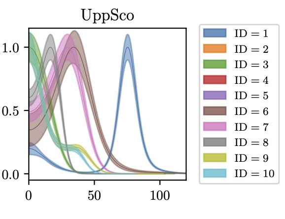
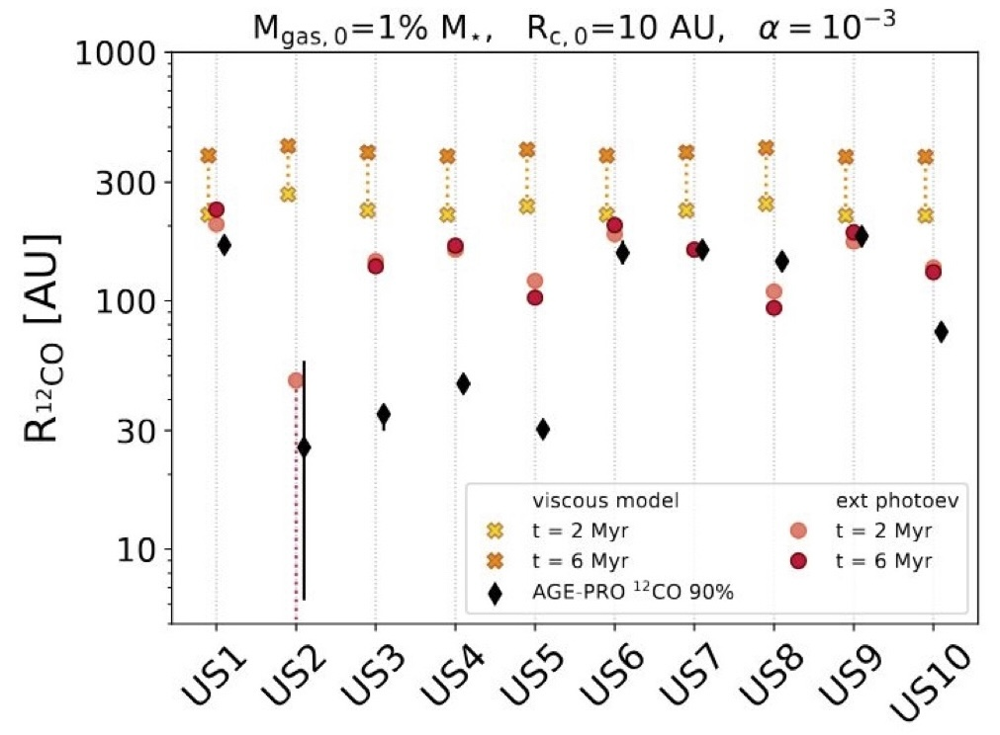

First author publications
Leaky dust trap in the PDS 70 disk revealed by ALMA Band 9 observations
Sierra et al. 2025b
Paper DataAbstract: We present new observations of the PDS 70 disc obtained with the Atacama Large Millimeter/sub-millimeter Array (ALMA) in Band 9 (671 GHz) at 0.242′′ resolution, which provide valuable insights into the spatial distribution of sub-millimetre grains in the disc. The data reveal a ring-like morphology, with a radial peak located between those previously observed at infrared wavelengths and longer millimetre observations. Additionally, we detect a tentative outer shoulder in Band 9 that is not observed at longer wavelengths. These findings suggest that small grains (∼100μm) traced by Band 9 may be escaping from the pressure bump both radially inwards and outwards, or may be tracing different disc layers than those probed at longer wavelengths. A multi-wavelength analysis of the disc at millimetre wavelengths and the best fit to the spectral energy distribution shows the presence of centimetre grains around the ring location, where the dust surface density also peaks, compatible with dust trap models. The grain size in the disc cavity is not well constrained but is consistent with grains as small as 10 μm, supporting the hypothesis that small dust grain filters through the cavity. We use dust evolution models to demonstrate that a turbulent viscosity of α≳10−3 allows small grains to filter through the disc gap, while α≲5×10−3 is required to retain large grains in the pressure bump. The Band 9 observations of PDS 70 validate theoretical models and confirm the presence of pebble flux through the disc gap.
High angular resolution evidence of dust traps from deep ALMA Band 3 observations of LkCa15
Sierra et al. 2025
Paper DataAbstract: Dust traps are the most promising mechanisms to explain the observed substructures in protoplanetary discs. In this work, we present high-angular resolution (∼60 mas, 9.4 au) and high-sensitivity Atacama Large Millimetre/submillimetre Array (ALMA) observations at 3 mm of the transitional disc around LkCa15. The new data, combined with previous high-resolution observations at λ=0.87,1.3 mm, make LkCa15 an ideal laboratory for testing the dust trapping mechanism. We found that the width of the three rings decreases linearly with frequency, and the spectral indices show local minima at the locations of the rings, consistent with dust trap models. Multi-wavelength modelling confirms that the dust surface density and maximum grain size peak at 69 and 101 au, and suggestive peak at 42 au. The estimated total dust mass is between 13-250 M⊕, depending on the chosen opacity. The inner disc shows bright and unresolved emission at 3 mm, exhibiting a spectral index of α1.3−3mm=0.3±0.37, and α3mm−3cm ranging from −0.1 to 0.0. These properties are consistent with free-free emission from an ionised jet or disc wind. Dust evolution models and radiative transfer calculations suggest that a viscosity coefficient of α=10−3, a fragmentation velocity of 10 m s−1, and DSHARP opacities provide the best match to the observed properties..
Constraints on the physical origin of large cavities in transition disks from multi-wavelength dust continuum emission
Sierra et al. 2024b
PaperAbstract: The physical origin of the large cavities observed in transition disks is to date still unclear. Different physical mechanisms (e.g., a companion, dead zones, enhanced grain growth) produce disk cavities of different depth, and the expected spatial distribution of gas and solids in each mechanism is not the same. In this work, we analyze the multi-wavelength interferometric visibilities of dust continuum observations obtained with ALMA and VLA for six transition disks: CQTau, UXTau A, LkCa15, RXJ1615, SR24S, and DMTau, and calculate brightness radial profiles, where diverse emission morphology is revealed at different wavelengths. The multi-wavelength data is used to model the spectral energy distribution and compute constraints on the radial profile of the dust surface density, maximum grain size, and dust temperature in each disk. They are compared with the observational signatures expected from various physical mechanisms responsible for disk cavities. The observational signatures suggest that the cavities observed in the disks around UXTau A, LkCa15, and RXJ1615 could potentially originate from a dust trap created by a companion. Conversely, in the disks around CQTau, SR24S, DMTau, the origin of the cavity remains unclear, although it is compatible with a pressure bump and grain growth within the cavity.
Hints of planet formation signatures in a large-cavity disk studied in the AGE-PRO ALMA Large Program
Sierra et al. 2024
Paper DataAbstract: Detecting planet signatures in protoplanetary disks is fundamental to understanding how and where planets form. In this work, we report dust and gas observational hints of planet formation in the disk around 2MASS-J16120668-301027, as part of the ALMA Large Program "AGE-PRO: ALMA survey of Gas Evolution in Protoplanetary disks". The disk was imaged with the Atacama Large Millimeter/submillimeter Array (ALMA) at Band 6 (1.3 mm) in dust continuum emission and four molecular lines: 12CO(J=2-1), 13CO(J=2-1), C18O(J=2-1), and H2CO(J=3 (3,0)-2(2,0)). Resolved observations of the dust continuum emission (angular resolution of ∼150 mas, 20 au) show a ring-like structure with a peak at 0.57′′(75 au), a deep gap with a minimum at 0.24′′(31 au), an inner disk, a bridge connecting the inner disk and the outer ring, along with a spiral arm structure, and a tentative detection (to 3σ) of a compact emission at the center of the disk gap, with an estimated dust mass of ∼2.7−12.9 Lunar masses. We also detected a kinematic kink (not coincident with any dust substructure) through several 12CO channel maps (angular resolution ∼200 mas, 30 au), located at a radius of ∼0.875′′ (115.6 au). After modeling the 12CO velocity rotation around the protostar, we identified a tentative rotating-like structure at the kink location with a geometry similar to that of the disk. We discuss potential explanations for the dust and gas substructures observed in the disk, and their potential connection to signatures of planet formation.
MAPS XIV. Revealing Disk Substructures in Multiwavelength Continuum Emission

Sierra et al. 2021
Paper Fits Measurement SetsAbstract: Constraining dust properties of planet-forming disks via high angular resolution observations is fundamental to understanding how solids are trapped in substructures and how dust growth may be favored or accelerated therein. We use ALMA dust continuum observations of the Molecules with ALMA at Planet-forming Scales (MAPS) disks and explore a large parameter space to constrain the radial distribution of solid mass and maximum grain size in each disk, including or excluding dust scattering. In the nonscattering model, the dust surface density and maximum grain size profiles decrease from the inner disks to the outer disks, with local maxima at the bright ring locations, as expected from dust trapping models. The inferred maximum grain sizes from the inner to outer disks decrease from 1 cm to 1 mm. For IM Lup, HD 163296, and MWC 480 in the scattering model, two solutions are compatible with their observed inner disk emission: one solution corresponding to a maximum grain size of a few millimeters (similar to the nonscattering model), and the other corresponding to a few hundred micrometer sizes. Based on the estimated Toomre parameter, only IM Lup – which shows a prominent spiral morphology in millimeter dust – is found to be gravitationally unstable. The estimated maximum Stokes number in all the disks lies between 0.01 and 0.3, and the estimated turbulence parameters in the rings of AS 209 and HD 163296 are close to the threshold where dust growth is limited by turbulent fragmentation. This paper is part of the MAPS special issue of the Astrophysical Journal Supplement.
Effects of Scattering, Temperature Gradients, and Settling on the Derived Dust Properties of Observed Protoplanetary Disks
Sierra & Lizano 2020
PaperAbstract: It is known that the millimeter dust thermal emission of protoplanetary disks is affected by scattering, such that for optically thick disks, the emission decreases with respect to the pure absorption case and the spectral indices can reach values below 2. The latter can also be obtained with temperature gradients. Using simple analytical models of radiative transfer in thin slabs, we quantify the effect of scattering, vertical temperature gradients, and dust settling on the emission and spectral indices of geometrically thin face-on accretion disks around young stars. We find that, in vertically isothermal disks with large albedo (> 0.6), the emergent intensity can increase at optical depths between 10^−2 and 10^−1. We show that dust settling has important effects on the spectral indices in the optically thick regime, since the disk emission mainly traces small dust grains in the upper layers of the disk. The λ = 870 μm emission of these small grains can hide large grains at the disk midplane when the dust surface density is larger than ∼3.21 g cm^−2. Finally, because of the change of the shape of the spectral energy distribution, optically thick disks at 1.3 mm and grains with sizes between 300 m 1 m < < amax mm have a 7 mm flux ∼60% higher than the extrapolation from higher millimeter frequencies, assumed when scattering is neglected. This effect could provide an explanation for the excess emission at l = 7 mm reported in several disks.
An Analytical Model of Radial Dust Trapping in Protoplanetary Disks
Sierra et al. 2019
PaperAbstract: We study dust concentration in axisymmetric gas rings in protoplanetary disks. Given the gas surface density, we derived an analytical total dust surface density by taking into account the differential concentration of all grain sizes. This model allows us to predict the local dust-to-gas mass ratio and the slope of the particle size distribution, as a function of radius. We test this analytical model by comparing it with a 3D magnetohydrodynamical simulation of dust evolution in an accretion disk. The model is also applied to the disk around HD 169142. By fitting the disk continuum observations simultaneously at λ = 0.87, 1.3, and 3.0 mm, we obtain a global dust-togas mass ratio of 1.05 ×10^2 and a viscosity coefficient α = 1.35 × 10^−2.
Dust Concentration and Emission in Protoplanetary Disks Vortices

Sierra et al. 2017
PaperAbstract: We study the dust concentration and emission in protoplanetary disks vortices. We extend the Lyra-Lin solution for the dust concentration of a single grain size to a power-law distribution of grain sizes. Assuming dust conservation in the disk, we find an analytic dust surface density as a function of the grain radius. We calculate the increase of the dust-to-gas mass ratio and the slope of the dust size distribution due to grain segregation within the vortex. We apply this model to a numerical simulation of a disk containing a persistent vortex. Due to the accumulation of large grains toward the vortex center, the dust-to-gas mass ratio increases by a factor of 10 from the background disk value, and decreases from 3.5 to 3.0. We find the disk emission at millimeter wavelengths corresponding to synthetic observations with ALMA and VLA. The simulated maps at 7 mm and 1 cm show a strong azimuthal asymmetry. This happens because, at these wavelengths, the disk becomes optically thin while the vortex remains optically thick. The large vortex opacity is mainly due to an increase in the dust-to-gas mass ratio. In addition, the change in the slope of the dust size distribution increases the opacity by a factor of two. We also show that the inclusion of the dust scattering opacity substantially changes the disks images.
Second, Third, and Fourth author publications
Observational Constraints on Evolution of Dust Disc Properties in Upper Scorpius
Pinilla et al. 2025b
PaperData
Abstract: Protoplanetary discs in the Upper Scorpius star-forming region are excellent laboratories to investigate late stages of planet formation. In this work, we analyse the morphology of the dust continuum emission of 121 discs from an ALMA Band 7 survey of the Upper Scorpius region. This analysis is done in the visibility plane, to measure the flux, geometry and characterise potential structures. We compare the results with state-of-the art gas and dust evolution models that include external photoevaporation, with mild values of the FUV of 1-40G0. From the visibility analysis, 52 of the 121 discs are resolved (43%). From the resolved discs, 24 discs have structures and 28 remain as smooth discs at the mean resolution scale of ∼0.1′′ (~14au). Our results show no significant dust disc size evolution of the surviving discs in UpperSco when compared to discs in younger star-forming regions, such as Lupus. We find a strong, steeper than previously reported correlation between dust disc size and disc millimeter continuum luminosity, in agreement with drift-dominated dust evolution models. We also find positive correlations between the dust disc mass vs. stellar mass and dust disc size vs. stellar mass. The slope of the dust disc size vs. stellar mass relationship is steeper compared to younger star forming regions. Additionally, we observe no significant correlation between dust disc properties and the environmental FUV, consistent with models predicting that dust disc properties are primarily shaped by drift and dust traps. Our models predict that gas disc masses and sizes should be highly affected by the moderate FUV values that Upper Scorpius discs experience in contrast to the dust, highlighting the need for deeper and higher-resolution gas observations of these discs exposed to mild external photoevaporation.
AGE-PRO IV. Dust and Gas Disk Properties in the Upper Scorpius Star-forming Region
Agurto-Gangas et al. 2025
PaperAbstract: The Atacama Large Millimeter/submillimeter Array (ALMA) large program AGE-PRO explores protoplanetary disk evolution by studying gas and dust across various ages. This work focuses on ten evolved disks in Upper Scorpius, observed in dust continuum emission, CO and its isotopologues, and N2H+ with ALMA Bands 6 and 7. Disk radii, from the radial location enclosing 68% of the flux, are comparable to those in the younger Lupus region for both gas and dust tracers. However, solid masses are about an order of magnitude below those in Lupus and Ophiuchus, while the dust spectral index suggests some level of dust evolution. These empirical findings align with a combination of radial drift, dust trapping, and grain growth into larger bodies. A moderate correlation between CO and continuum f luxes suggests a link between gas and dust content, through the increased scatter compared to younger regions, possibly due to age variations, gas-to-dust ratio differences, or CO depletion. Additionally, the correlation between C18O and N2H+ fluxes observed in Lupus persists in Upper Sco, indicating a relatively stable CO gas abundance over the Class II stage of disk evolution. In conclusion, the AGE-PRO survey of Upper Scorpius disks reveals intriguing trends in disk evolution. The findings point towards potential gas evolution and the presence of dust traps in these older disks. Future highresolution observations are needed to confirm these possibilities and further refine our understanding of disk evolution and planet formation in older environments.
AGE-PRO X. Dust substructures, disk geometries, and dust-disk radii

Vioque et al. 2025
PaperAbstract: We perform visibility fitting to the dust continuum Band 6 1.3 mm data of the 30 protoplanetary disks in the AGE-PRO ALMA Large Program. We obtain disk geometries, dust-disk radii, and azimuthally symmetric radial profiles of the intensity of the dust continuum emission. We examine the presence of continuum substructures in the AGE-PRO sample by using these radial profiles and their residuals. We detect substructures in 15 out of 30 disks. We report five disks with large (>15 au) inner dust cavities. The Ophiuchus Class I disks show dust-disk substructures in ∼80% of the resolved sources. This evidences the early formation of substructures in protoplanetary disks. A spiral is identified in IRS 63, hinting to gravitational instability in this massive disk. We compare our dust-disk brightness radial profiles with gas-disk brightness radial profiles and discuss colocal substructures in both tracers. In addition, we discuss the evolution of dust-disk radii and substructures across Ophiuchus, Lupus, and Upper Scorpius. We find that disks in Lupus and Upper Scorpius with large inner dust cavities have typical gas-disk masses, suggesting an abundance of dust cavities in these regions. The prevalence of pressure dust traps at later ages is supported by a potential trend with time with more disks with large inner dust cavities (or transition disks) in Upper Scorpius and the absence of evolution of dust-disk sizes with time in the AGE-PRO sample. We propose this is caused by an evolutionary sequence with a high fraction of protoplanetary disks with inner protoplanets carving dust cavities.
AGE-PRO XII. Extreme millimeter variability detected in a Class II disk
Miley et al. 2025
PaperAbstract: Variability of millimetre wavelength continuum emission from Class II protoplanetary disks is extremely rare, and when detected it is usually interpreted as originating from non-thermal emission mechanisms that relate to the host star itself rather than its disk. During observations made as part of the AGE-PRO ALMA Large Program, significantvariability in the brightness of the 2MASS J162028632442087 system was detected between individual executions. We report the observed properties of the variability detected at millimetre wavelengths and investigate potential driving mechanisms. To investigate the nature of the variability we construct a light curve from the continuum observations and analyse images constructed from both flaring and quiescent emission. We characterise the dust disk around the star through analysis in the image and visibility plane, and carry out kinematic analysis of CO (2–1) emission from the gas disk. The continuum flux decays by a factor of 8 in less than an hour, and by a factor of 13 within 8 days. The peak brightness coincides with an expected brightness maximum extrapolated from the periodicity of previously observed optical variability. The flare is most likely the product of synchrotron emission in the close vicinity of the star. The nature of the millimetre flare closely resembles those detected in very close binary systems, and may be due to the interaction of magnetic fields in an as yet undetected binary. Alternatively, if the central host is a single-star object, the flare may be due to the interaction of magnetic field loops at the stellar surface or a strong accretion burst.
Dust characterization of protoplanetary disks: a guide to multi-wavelength analyses and accurate dust mass measurements

Viscardi et al. 2025
PaperAbstract: Multi-wavelength dust continuum observations of protoplanetary disks are essential for accurately measuring two key ingredients of planets formation theories: the dust mass and grain size. Unfortunately, they are also extremely time-expensive. We aim to investigate the most economic way of performing this analysis. We benchmark the dust characterization analysis on multi-wavelength observations of two disk models. We test three different combinations of bands (in the 0.45 mm → 7.46 mm range) to see how optically thick and thin observations aid the reconstruction of the dust properties for different morphologies and in three different dust mass regimes. We also test different spatial resolutions. Dust properties are robustly measured in a multi-band analysis if optically thin observations are included. For typical disks, this requires wavelengths longer than 3 mm. High-resolution (< 0.03"-0.05") is fundamental to resolve the changes in dust content of substructures. However, lower-resolution results still provide an accurate measurement of the total dust mass and of the level of grain growth of rings. Additionally, we propose a new approach that successfully combines lower and higher resolution observations in the multi-wavelength analysis without losing spatial information. We also test individually enhancing the resolution of each radial intensity profile with Frank but we note the presence of artifacts. Finally, we discuss on the total dust mass that we derive from the SED analyses and compare it with the traditional method of deriving dust masses from millimeter fluxes. Accurate dust mass measurements from the SED analysis can be derived by including optically thin tracers. On the other hand, single-wavelength flux-based masses are always underestimated by even more than one order of magnitude.
Dust-Trapping Ring in the Planet-Hosting Disk of Elias 2-24
Carvalho et al. 2024
PaperAbstract: Rings and gaps are among the most widely observed forms of substructure in protoplanetary disks. A gap-ring pair may be formed when a planet carves a gap in the disk, which produces a local pressure maximum following the gap that traps inwardly drifting dust grains and appears as a bright ring due to the enhanced dust density. A dust-trapping ring would provide a promising environment for solid growth and possibly planetesimal production via the streaming instability. We present evidence of dust trapping in the bright ring of the planet-hosting disk Elias 2-24, from the analysis of 1.3 mm and 3 mm ALMA observations at high spatial resolution (0.029 arcsec, 4.0 au). We leverage the high spatial resolution to demonstrate that larger grains are more efficiently trapped and place constraints on the local turbulence (8 × 10−4 < αturb < 0.03) and the gas-to-dust ratio (Σg/Σd < 30) in the ring. Using a scattering-included marginal probability analysis we measure a total dust disk mass of Mdust = 13.8(+0.7,−0.5) × 10−4 M⊙. We also show that at the orbital radius of the proposed perturber, the gap is cleared of material down to a flux contrast of 10−3 of the peak flux in the disk.
Characterization of the dust content in the ring around Sz 91: indications for planetesimal formation?
Mauco et al. 2021
PaperAbstract: One of the most important questions in the field of planet formation is how mm-cm sized dust particles overcome the radial drift and fragmentation barriers to form kilometer-sized planetesimals. ALMA observations of protoplanetary disks, in particular transition disks or disks with clear signs of substructures, can provide new constraints on theories of grain growth and planetesimal formation and therefore represent one possibility to progress on this issue. We here present ALMA band 4 (2.1 mm) observations of the transition disk system Sz 91 and combine them with previously obtained band 6 (1.3 mm) and 7 (0.9 mm) observations. Sz 91 with its well defined mm-ring, more extended gas disk, and evidence of smaller dust particles close to the star, is a clear case of dust filtering and the accumulation of mm sized particles in a gas pressure bump. We computed the spectral index (nearly constant at ∼3.34), optical depth (marginally optically thick), and maximum grain size (∼0.61 mm) in the dust ring from the multi-wavelength ALMA observations and compared the results with recently published simulations of grain growth in disk substructures. Our observational results are in very good agreement with the predictions of models for grain growth in dust rings that include fragmentation and planetesimal formation through the streaming instability.
Exploring the Grain Properties in the Disk of HL Tau with an Evolutionary Model

Tapia et al. 2019
PaperAbstract: We model the ALMA and Very Large Array (VLA) millimeter radial profiles of the disk around HL Tau to constrain the properties of the dust grains. We adopt the disk evolutionary models of Lynden-Bell & Pringle and calculate their temperature and density structure and emission. These disks are heated by the internal viscosity and irradiated by the central star and a warm envelope. We consider a dust size distribution n(a)da ∝ a^−3.5 da, and vary the maximum grain size in the atmosphere and the midplane, amax = 100 μm, 1 mm, and 1 cm. We also include dust settling and vary the dust-to-gas mass ratio from 1 to 9 times the ISM value. We find that the models that can fit the observed level of emission along the profiles at all wavelengths have an atmosphere with a maximum grain size amax = 100 μm, and a midplane with amax = 1 cm. The disk substructure, with a deficit of emission in the gaps, can be due to dust properties in these regions that are different from those in the rings. We test an opacity effect (different amax) and a dust mass deficit (smaller dust-to-gas mass ratio) in the gaps. We find that the emission profiles are better reproduced by models with a dust deficit in the gaps, although a combined effect is also possible. These models have a global dust-to-gas mass ratio twice the ISM value, needed to reach the level of emission of the 7.8 mm VLA profile.
The Radial Distribution of Dust Particles in the HL Tau Disk from ALMA and VLA Observations
Carrasco-Gonzalez et al. 2019
PaperAbstract: Understanding planet formation requires one to discern how dust grows in protoplanetary disks. An important parameter to measure in disks is the maximum dust grain size present. This is usually estimated through measurements of the dust opacity at different millimeter wavelengths assuming optically thin emission and dust opacity dominated by absorption. However, Atacama Large Millimeter /submillimeter Array (ALMA) observations have shown that these assumptions might not be correct in the case of protoplanetary disks, leading to overestimation of particle sizes and to underestimation of the disk’s mass. Here, we present an analysis of high-quality ALMA and Very Large Array images of the HL Tau protoplanetary disk, covering a wide range of wavelengths, from 0.8 mm to 1 cm, and with a physical resolution of ∼7.35 au. We describe a procedure to analyze a set of millimeter images without any assumption about the optical depth of the emission, and including the effects of absorption and scattering in the dust opacity. This procedure allows us to obtain the dust temperature, the dust surface density, and the maximum particle size at each radius. In the HL Tau disk, we found that particles have already grown to a few millimeters in size. We detect differences in the dust properties between dark and bright rings, with dark rings containing low dust density and small dust particles. Different features in the HL Tau disk seem to have different origins. Planet–disk interactions can explain substructure in the external half of the disk, but the internal rings seem to be associated with the presence of snow lines of several molecules.
Other co-authored publications
Inner Disc and Circumplanetary Material in the PDS 70 System: Insights from Multi-Epoch, Multi-Frequency ALMA Observations
Fasano et al. 2025
PaperAbstract: Context. The two giant protoplanets directly detected in the dust-depleted cavity of PDS 70 offer a unique opportunity to study the processes of ongoing planet formation. The planets have been detected both in IR thermal light and in the Hα line, indicating that they are actively accreting material from their surroundings. Aims. We calibrate and analyse archival Atacama Large Millimetre/subMillimetre Array (ALMA) Band 6 and 7 observations of PDS 70 to detect circumplanetary material in independent datasets taken at different epochs in 2019, 2021 and 2023 and assess its possible motion. Methods. We perform 2D visibility modelling of the high resolution ALMA Band 6 (∼ 0.11′′ ×0.08′′) and Band 7 (∼ 0.05′′ ×0.05′′) dust continuum emission of the outer disc. After subtracting the model from the data, we image the dust continuum emission in the cavity of PDS 70 at multiple epochs. Results. Were-detect the compact dust emission around PDS70cinallourdatasets in Band6and7,withmorethan3.8σsignificance, and tentatively detect compact emission around PDS 70 b at ∼ 3σ in the Band 6 datasets, with a peak emission of 59 ± 17 µJy/beam and 46 ± 14 µJy/beam. We find the astrometric relative position of the compact emission around PDS 70 c to be consistent with the expected position of the planet in the 2019-2023 time range. We measure a peak flux difference of up to 64 ± 34 µJy/beam at 1σ confidence level for the continuum emission coming from the region around PDS 70 c and perform a Bayesian test on our measurements, finding that they are not consistent with significant variable emission. We find no evidence of flux variability in the inner disc. We measure the dust mass of the material co-located with PDS 70 c and the inner disc to be in the range 0.008−0.063 M⊕ and 0.04−0.31 M⊕,respectively, consistent with previous measurements. Additionally, we obtain Band 6-7 spectral indices of 2.5±1.2 and 3.2±0.5 for the dust emission around PDS 70 c and in the inner disc, respectively, suggesting the inner disc emission is dominated by optically thin dust.
AGE-PRO I. Program Overview and First Results
Zhang et al. 2025
PaperAbstract: We present the ALMA Survey of Gas Evolution of PROtoplanetary Disks (AGE-PRO), a Large Program of the Atacama Large Millimeter/submillimeter Array (ALMA). AGE-PRO aims to systematically trace the evolution of gas disk mass and size throughout the lifetime of protoplanetary disks. It uses a carefully selected sample of 30 disks around M3-K6 stars in three nearby star-forming regions: Ophiuchus (0.5-1Myr), Lupus (1-3Myr), and Upper Sco (2-6Myr). Assuming the three regions had similar initial conditions and evolutionary paths, we find the median gas disk mass appears to decrease with age. Ophiuchus disks have the highest median gas mass (6MJup), while the Lupus and Upper Sco disks have significantly lower median masses (0.68 and 0.44MJup, respectively). Notably, the gas and dust disk masses appear to evolve on different timescales. This is evidenced by the median gas-to-dust mass ratio, which decreases from 122 in the youngest disks (<1Myr) to 46 in Lupus disks, and then increases to 120 in the Upper Sco disks. The median gas disk sizes range between 74-110au, suggesting that typical gas disks are much smaller than those of well-studied, massive disks. Population synthesis models suggest that magneto-hydrodynamic wind-driven accretion can reproduce median disk properties across all three regions, when assuming compact disks with a declining magnetic field over time. In contrast, turbulent-driven models overestimate gas masses of >1Myr disks by an order of magnitude. Here we discuss the program’s motivation, survey design, sample selection, observation and data calibration processes, and highlight the initial results.
AGE-PRO II. Dust and Gas Disk Properties in the Ophiuchus Star-forming Region
Ruiz-Rodriguez et al. 2025
PaperAbstract: The ALMA survey of Gas Evolution in PROtoplanetary disks (AGE-PRO) Large Program aims to trace the evolution of gas disk mass and size throughout the lifetime of protoplanetary disks. This paper presents Band-6 ALMA observations of 10 embedded (Class I and Flat Spectrum) sources in the Ophiuchus molecular cloud, with spectral types ranging from M3 to K6 stars, which serve as the evolutionary starting point in the AGE-PRO sample. While we find 4 nearly edge-on disks (≥70 deg.), and 3 highly inclined disks (≥60 deg.) in our sample, we show that, as a population, embedded disks in Ophiuchus are not significantly contaminated by more-evolved, but highly inclined sources. We derived dust disk masses from the Band-6 continuum and estimated gas disk masses from the C18O J=2−1 and C17O J=2−1 lines. The mass estimates from the C17O line are slightly higher, suggesting C18O emission might be partially optically thick. While the 12CO and 13CO lines are severely contaminated by extended emission and self-absorption, the C18O and C17O lines allowed to trace the radial extent of the gaseous disks. From these measurements, we found that the C18O J=2−1 and C17O J=2−1 f luxes correlate well with each other and with the continuum fluxes. Furthermore, the C18O and C17O lines present a larger radial extension than disk dust sizes by factors ranging from ∼1.5 to ∼2.5, as it is found for Class II disks using the radial extension of the 12CO. In addition, we have detected outflows in three disks from 12CO observations.
AGE-PRO III. Dust and Gas Disk Properties in the Lupus Star-forming Region
Deng et al. 2025
PaperAbstract: We present Band 6 and Band 7 observations of 10 Lupus disks around M3-K6 stars from the ALMA survey of Gas Evolution in PROtoplanetary disks (AGE-PRO) Large Program. In addition to continuum emission in both bands, our Band 6 setup covers the 12CO, 13CO and C18OJ=2-1 lines, while our Band 7 setup covers the N2H+J=3-2 line. All of our sources are detected in 12CO and 13CO, 7 out of 10 are detected in C18O, and 3 are detected in N2H+. We find strong correlations between the CO isotopologue line fluxes and the continuum flux densities. With the exception of one disk, we also identify a strong correlation between the C18OJ=2-1 and N2H+J=3-2 fluxes, indicating similar CO abundances across this sample. For the two sources with well-resolved continuum and 12COJ=2-1 images, we find that their gas-to-dust size ratio is consistent with the median value of ∼ 2 inferred from a larger sample of Lupus disks. We derive dust disk masses from continuum flux densities. We estimate gas disk masses by comparing C18OJ=2-1 line fluxes with those predicted by the limited grid of self-consistent disk models of Ruaud et al. (2022). A comparison of these mass estimates with those derived by Trapman et al. (2025, in press.a), using a combination of CO isotopologue and N2H+ line emission, shows that the masses are consistent with each other. Some discrepancies appear for small and faint disks, but they are still within the uncertainties. Both methods find gas disk masses increase with dust disk masses, and gas-to-dust mass ratios are between 10 − 100 in the AGE-PRO Lupus sample.
AGE-PRO V. Protoplanetary Gas Disk Masses
Trapman et al. 2025
PaperAbstract: The evolution of the gas mass of planet-forming disks around young stars is crucial for our understanding of planet formation, yet it has proven hard to constrain observationally, due both to the difficulties of measuring gas masses and the lack of a homogeneous sample. Here we present a large grid of thermochemical models which we use to measure protoplanetary gas disk masses of AGE-PRO, the ALMA survey of Gas Evolution in PROtoplanetary disks. AGE-PRO covers a sample of 30 disks around similar spectral type (M3-K6) stars with ages between 0.1 and 10 Myr. Our approach is to simultaneously fit observations of CO isotopologues and N2H+, a complementary molecule produced when CO freezes out. We find that the median gas mass of the three regions decreases over time, from 7.0+4.4 −2.6 × 10−3 M⊙ in Ophiuchus (≲ 1 Myr) to 9.4+5.4 −3.4 × 10−4 M⊙ for Lupus (∼1-3 Myr) and 6.8+5.1 −2.8 × 10−4 M⊙ for Upper Sco (∼2-6 Myr), with ∼ 1 dex scatter in gas mass in each region. We note that the gas mass distributions for Lupus and Upper Sco look very similar, which could be due to survivorship bias for the latter. The median bulk CO abundance in the CO emitting layer is found to be a factor ∼ 10 lower than the ISM value but does not significantly change between Lupus and Upper Sco. From Lupus to Upper Sco the median gas-to-dust mass ratio increases by a factor ∼ 3 from ∼ 40 to ∼ 120, suggesting efficient inward pebble drift and/or the formation of planetesimals.
AGE-PRO VI. Comparison of Dust Evolution Models to AGE-PRO Observations
Kurtovic et al. 2025
PaperAbstract: The potential for planet formation of a circumstellar disk depends on the dust and gas reservoirs, which evolve as a function of the disk age. The ALMA Large Program AGE-PRO has measured several disk properties across three star-forming regions of different ages, and in this study we compare the observational results to dust evolution simulations. Using DustPy for the dust evolution, and RADMC-3D for the radiative transfer, we ran a large grid of models spanning stellar masses of 0.25, 0.50, 0.75, and 1.0M⊙, with different initial conditions, including: disk sizes, disk gas masses, and dust-to-gas ratio, and viscosity. Our models are performed assuming smooth, weakly, or strongly substructured disks, aiming to investigate if any observational trend can favor or exclude the presence of dust traps. The observed gas masses in the disks of the AGE-PRO sample are not reproducible with our models, which only consider viscous evolution with constant α, suggesting that additional physical mechanisms play a role in the evolution of the gas mass of disks. When comparing the dust continuum emission f luxes and sizes at 1.3mm, we find that most of the disks in the AGE-PRO sample are consistent with simulations that have either weak or strong dust traps. The evolution of spectral index in the AGE-PRO sample is also suggestive of an unresolved population of dust traps. Future observations at high angular resolution are still needed to test several hypotheses that result from comparing the observations to our simulations, including that more massive disks in gas mass have the potential to form dust traps at larger disk radii.
AGE-PRO VII. Testing accretion mechanisms from disk population synthesis
Tabone et al. 2025
PaperAbstract: The architecture of planetary systems depends on the evolution of the disks in which they form. In this work, we develop a population synthesis approach to interpret the AGE-PRO measurements of disk gas mass and size considering two scenarios: turbulence-driven evolution with photoevaporative winds and MHD disk-winddriven evolution. A systematic method is proposed to constrain the distribution of disk parameters from the disk fractions, accretion rates, disk gas masses, and CO gas sizes. We find that turbulence-driven accretion with initially compact disks (R0 ≃ 5 − 20 au), low mass-loss rates, and relatively long viscous timescales (tν,0 ≃ 0.4−3 Myr or αSS ≃ 2−4×10−4)canreproduce the disk fraction and gas sizes. However, the distribution of apparent disk lifetime defined as the MD/ ˙ M∗ ratio is severely overestimated by turbulence-driven models. On the other hand, MHD wind-driven accretion can reproduce the bulk properties of the disk populations from Ophiuchus to Upper Sco assuming compact disks with an initial magnetization of about β ≃ 105 (αDW ≃ 0.5 −1×10−3) and a magnetic field that declines with time. More studies are needed to confirm the low masses found by AGE-PRO, notably for compact disks that question turbulence-driven accretion. The constrained synthetic disk populations can now be used for realistic planet population models to interpret the properties of planetary systems on a statistical basis.
AGE-PRO VIII. The impact of external photoevaporation on disk masses and radii in Upper Scorpius

Anania et al. 2025
PaperAbstract: Protoplanetary disk evolution can be deeply influenced by the UV radiation emitted by neighboring massive stars (mainly of spectral type O and B). We show that the process of external photoevaporation, which causes an outside-in depletion of disk material due to environmental UV radiation, can lead to a significant decrease in disk size, and moderate in disk mass and lifetime even at moderate irradiation levels (1-10 G0). In this work we investigate the role of external photoevaporation in shaping the masses and sizes of the ten AGE-PRO disks in the Upper Scorpius region, which we estimate to be subject to FUV fluxes ranging between ∼2 and ∼12 G0, on average. We compare the disk masses and sizes resulting from 1D numerical viscous evolution simulations in which the effect of external photoevaporation is included, to the values retrieved from the AGE-PRO observations. While the pure viscous framework fails in adequately explaining the observed disk properties in Upper Scorpius, with the inclusion of external photoevaporation we can successfully reproduce gas disk sizes for 7 out of 10 sources within a factor <2, when the initial disk mass is 1-10% of the stellar mass. We emphasize the importance of accounting for the environmental irradiation when comparing star-forming regions of different ages, even when moderate FUV irradiation fields are experienced, as in the case of Upper Scorpius.
AGE-PRO XI. Beam-corrected gas disk sizes from fitting CO moment zero maps
Trapman et al. 2025b
PaperAbstract: The inward drift of mm-cm sized pebbles in protoplanetary disks has become an important part of our current theories of planet formation and, more recently, planet composition as well. The gas-to-dust size ratio of protoplanetary disks can provide an important constraint on how pebbles have drifted inward provided that observational effects, especially resolution, can be accounted for. Here we present a method for fitting beamconvolved models to integrated intensity maps of line emission using the astropy python package and use it to fit 12CO moment zero maps of ten Lupus and ten Upper Scorpius protoplanetary disks from the AGE-PRO ALMA Large Program, a sample of disks around M3-K6 stars that cover the ∼ 1 to 6 Myr of gas disk evolution. From the unconvolved best fit models we measure the gas disk size (Rmodel CO, 90%), which we combine with the dust disk size (RFRANK dust, 90%) from continuum visibility fits from Vioque et al. (2025, in press.) to compute beam-corrected gas-to-dust size ratios. In our sample we find gas-to-dust size ratios between ∼ 1 and ∼ 5.5, with a median value of 2.78+0.37 −0.32. Contrary to models of dust evolution that predict an increasing size ratio with time, we find that the younger disks in Lupus have similar (or even larger) median ratios (3.02+0.33 −0.33) than the older disks in Upper Sco (2.46+0.53 −0.38). A possible explanation to this discrepancy is that pebble drift is halted in dust traps combined with truncation of the gas disk by external photo-evaporation in Upper Sco, although survivorship bias could also play a role.
Disk Evolution Study Through Imaging of Nearby Young Stars (DESTINYS): Evidence of planet-disk interaction in the 2MASSJ16120668-3010270 system
Ginski et al. 2025
PaperAbstract: The architectures of exoplanet systems are likely set during the initial planet-formation phase in the circumstellar disk. To understand this process, we have to study the earliest phases of planet formation. Complex sub-structures, believed to be driven by embedded planets, have been detected in a significant portion of disks observed at high angular resolution. We aim to extend the sample of such disks to low stellar masses and to connect the disk morphology to the expected proto-planet properties. We resolve the disk in the 2MASSJ16120668-3010270 system for the first time in scattered near-infrared light on scales of 10 au using VLT/SPHERE and reveal an exceptionally structured disk. We find an inner disk (inside 40 au) with two spiral arms, separated by a gap from an outer ring. By comparison with hydrodynamic models, we find that these structures are consistent with the presence of an embedded gas giant with a mass range between 0.1 and 5 MJup depending on the employed model. Our SPHERE observations find a tentative candidate point source within the disk gap, which may be consistent with this mass range if it indeed traces thermal emission by an embedded planet. This interpretation is somewhat strengthened by the proximity of this signal to compact mm continuum emission in the disk gap, which may trace circumplanetary material. It is, however, unclear if this tentative companion candidate could be responsible for the observed disk gap size, given its close proximity to the inner disk. The 2MASSJ16120668-3010270 system is one of only a few systems that shows this exceptional morphology of spiral arms located inside a scattered light gap and ring. We speculate that this may have to do with a higher disk viscosity compared with other systems such as PDS 70.
Hints of Disk Substructure in the First Brown Dwarf with a Dynamical Mass Constraint
Santamaria Miranda et al. 2025
PaperAbstract: We present high-resolution ALMA observations at 0.89 mm of the Class II brown dwarf 2MASS J04442713+2512164 (2M0444), achieving a spatial resolution of 0.''046 (∼6.4 au at the distance to the source). These observations targeted continuum emission together with 12CO (3-2) molecular line. The line emission traces a Keplerian disk, allowing us to derive a dynamical mass between 0.043-0.092 M⊙ for the central object. We constrain the gas-to-dust disk size ratio to be ∼7, consistent with efficient radial drift. However, the observed dust emission suggest that a dust trap is present, enough to retain some dust particles. We perform visibility fitting of the continuum emission, and under the assumption of annular substructure, our best fit shows a gap and a ring at 98.1+4.2−8.4 mas (∼14 au) and 116.0+4.2−4.8 mas (∼16 au), respectively, with a gap width of 20 mas (∼3 au). To ensure robustness, the data were analyzed through a variety of methods in both the image and uv plane, employing multiple codes and approaches. This tentative disk structure could be linked to a possible planetary companion in the process of formation. These results provide the first dynamical mass of the lowest mass object to date, together with the possible direct detection of a substructure, offering new insights into disk dynamics and planet formation in the very low-mass regime. Future higher spatial resolution ALMA observations will be essential to confirm these findings and further investigate the link between substructures and planet formation in brown dwarf disks.
The Ophiuchus DIsk Survey Employing ALMA (ODISEA): A Unified Evolutionary Sequence of Planet-Driven Substructures Explaining the Diversity of Disk Morphologies
Orcajo et al. 2025
PaperAbstract: Understanding the origin of substructures in protoplanetary disks and their connection to planet formation is currently one of the main challenges in astrophysics. While some disks appear smooth, most exhibit diverse substructures such as gaps, rings, or inner cavities, with varying brightness and depth. As part of the Ophiuchus Disk Survey Employing ALMA (ODISEA), we previously proposed an evolutionary sequence to unify this diversity, driven by the formation of giant planets through core accretion and subsequent planet-disk interactions. By combining the disk evolution and planet formation code PLANETALP with the radiative transfer code RADMC-3D, we have now reproduced the key aspects of the proposed evolutionary sequence. Starting with a smooth disk (like e.g., WLY 2-63), we modeled the evolution of a fiducial disk with a 1 Jupiter-mass planet at 57 au. Within a few hundreds of orbits, a narrow gap forms, resembling ISO-Oph 17. By ∼0.1 Myr, the gap widens, and dust accumulates at the cavity edge, producing a structure similar to Elias 2-24. At ∼0.4 Myr, the disk evolves further into a morphology akin to DoAr 44, characterized by a smaller inner disk and a brighter inner rim. By ∼1 Myr, the system transitions to a single narrow ring, resembling RXJ1633.9-2442. This line of work strongly supports the planetary origin of substructures and enables the possibility of identifying a population of planets that is currently beyond the reach of more direct detection techniques.
The Ophiuchus DIsk Survey Employing ALMA (ODISEA): Complete Size Distributions for the 100 Brightest Disks Across Multiplicity and SED Classes

Dasgupta et al. 2025
PaperAbstract: The size of a protoplanetary disk is a fundamental property, yet most remain unresolved, even in nearby star-forming regions (d ∼ 140-200 pc). We present the complete continuum size distribution for the 105 brightest protoplanetary disks (Mdust ≳ 2 M⊕) in the Ophiuchus cloud, obtained from ALMA Band 8 (410 GHz) observations at 0.05′′ (7 au) to 0.15′′ (21 au) resolution. This sample includes 54 Class II and 51 Class I and Flat Spectrum sources, providing a comprehensive distribution across evolutionary stages. We measure the Half Width at Half Maximum (HWHM) and the radius encircling 68% of the flux (R68%) for most non-binary disks, yielding the largest flux-limited sample of resolved disks in any star-forming region. The distribution is log-normal with a median value of ∼14 au and a logarithmic standard deviation σlog=0.46 (factor of 2.9 in linear scale). Disks in close binary systems (< 200 au separation) have smaller radii, with median value of ∼5 au, indicating efficient radial drift as predicted by dust evolution models. The size distribution for young embedded objects (SED Class I and Flat Spectrum, age ≲ 1 Myr) is similar to that of Class II objects (age ∼ a few Myr), implying that pressure bumps must be common at early disk stages to prevent mm-sized particle migration at au scales.
Porous Dust Particles in Protoplanetary Disks: Application to the HLTau Disk

Zhang et al. 2023
PaperAbstract: Dust particle sizes constrained from dust continuum and polarization observations by radio interferometry are inconsistent by at least an order of magnitude. Motivated by porous dust observed in small Solar System bodies (e.g., from the Rosetta mission), we explore how the dust particle's porosity affects the estimated particle sizes from these two methods. Porous particles have lower refractive indices, which affect both opacity and polarization fraction. With weaker Mie interference patterns, the porous particles have lower opacity at mm wavelengths than the compact particles if the particle size exceeds several hundred microns. Consequently, the inferred dust mass using porous particles can be up to a factor of six higher. The most significant difference between compact and porous particles is their scattering properties. The porous particles have a wider range of particle sizes with high linear polarization from dust self-scattering, allowing mm-cm-sized particles to explain polarization observations. With a Bayesian approach, we use porous particles to fit HL Tau disk's multi-wavelength continuum and mm-polarization observations from ALMA and VLA. The moderately porous particles with sizes from 1 mm-1 m can explain both continuum and polarization observations, especially in the region between 20-60 au. If the particles in HL Tau are porous, the porosity should be from 70% to 97% from current polarization observations. We also predict that future observations of the self-scattering linear polarization at longer wavelengths (e.g., ALMA B1 and ngVLA) have the potential to further constrain the particle's porosity and size.
MAPS: A Circumplanetary Disk Candidate in Molecular-line Emission in the AS 209 Disk

Bae et al. 2022
PaperAbstract: We report the discovery of a circumplanetary disk (CPD) candidate embedded in the circumstellar disk of the T Tauri star AS 209 at a radial distance of about 200 au (on-sky separation of 1farcs4 from the star at a position angle of 161°), isolated via 13CO J = 2−1 emission. This is the first instance of CPD detection via gaseous emission capable of tracing the overall CPD mass. The CPD is spatially unresolved with a 117 × 82 mas beam and manifests as a point source in 13CO, indicating that its diameter is ≲14 au. The CPD is embedded within an annular gap in the circumstellar disk previously identified using 12CO and near-infrared scattered-light observations and is associated with localized velocity perturbations in 12CO. The coincidence of these features suggests that they have a common origin: an embedded giant planet. We use the 13CO intensity to constrain the CPD gas temperature and mass. We find that the CPD temperature is ≳35 K, higher than the circumstellar disk temperature at the radial location of the CPD, 22 K, suggesting that heating sources localized to the CPD must be present. The CPD gas mass is ≳0.095 MJup ≃ 30 M⊕ adopting a standard 13CO abundance. From the nondetection of millimeter continuum emission at the location of the CPD (3σ flux density ≲26.4 μJy), we infer that the CPD dust mass is ≲0.027 M⊕ ≃ 2.2 lunar masses, indicating a low dust-to-gas mass ratio of ≲9 × 10−4. We discuss the formation mechanism of the CPD-hosting giant planet on a wide orbit in the framework of gravitational instability and pebble accretion.
A Highly Settled Disk around Oph163131
Villenave et al. 2022
PaperAbstract: High dust density in the midplane of protoplanetary disks is favorable for efficient grain growth and can allow fast formation of planetesimals and planets, before disks dissipate. Vertical settling and dust trapping in pressure maxima are two mechanisms allowing dust to concentrate in geometrically thin and high-density regions. In this work, we aim to study these mechanisms in the highly inclined protoplanetary disk SSTC2D J163131.2-242627 (Oph 163131, i ∼ 84°). We present new high-angular-resolution continuum and 12CO ALMA observations of Oph 163131. The gas emission appears significantly more extended in the vertical and radial direction compared to the dust emission, consistent with vertical settling and possibly radial drift. In addition, the new continuum observations reveal two clear rings. The outer ring, located at ∼100 au, is well-resolved in the observations, allowing us to put stringent constraints on the vertical extent of millimeter dust particles. We model the disk using radiative transfer and find that the scale height of millimeter-sized grains is 0.5 au or less at 100 au from the central star. This value is about one order of magnitude smaller than the scale height of smaller micron-sized dust grains constrained by previous modeling, which implies that efficient settling of the large grains is occurring in the disk. When adopting a parametric dust settling prescription, we find that the observations are consistent with a turbulent viscosity coefficient of about α ~ 10−5 at 100 au. Finally, we find that the thin dust scale height measured in Oph 163131 is favorable for planetary growth by pebble accretion: a 10 ME planet may grow within less than 10 Myr, even in orbits exceeding 50 au.
MAPS I. Program Overview and Highlights
Oberg et al. 2021
PaperAbstract: Planets form and obtain their compositions in dust and gas-rich disks around young stars, and the outcome of this process is intimately linked to the disk chemical properties. The distributions of molecules across disks regulate the elemental compositions of planets, including C/N/O/S ratios and metallicity (O/H and C/H), as well as access to water and prebiotically relevant organics. Emission from molecules also encodes information on disk ionization levels, temperature structures, kinematics, and gas surface densities, which are all key ingredients of disk evolution and planet formation models. The Molecules with ALMA at Planet-forming Scales (MAPS) ALMA Large Program was designed to expand our understanding of the chemistry of planet formation by exploring disk chemical structures down to 10 au scales. The MAPS program focuses on five disks – around IM Lup, GM Aur, AS 209, HD 163296, and MWC 480 – in which dust substructures are detected and planet formation appears to be ongoing. We observed these disks in 4 spectral setups, which together cover ∼50 lines from over 20 different species. This paper introduces the ApJS MAPS Special Issue by presenting an overview of the program motivation, disk sample, observational details, and calibration strategy. We also highlight key results, including discoveries of links between dust, gas, and chemical sub-structures, large reservoirs of nitriles and other organics in the inner disk regions, and elevated C/O ratios across most disks. We discuss how this collection of results is reshaping our view of the chemistry of planet formation.
MAPS III. Characteristics of Radial Chemical Substructures
Law et al. 2021
PaperAbstract: The Molecules with ALMA at Planet-forming Scales (MAPS) Large Program provides a detailed, high resolution (∼10–20 au) view of molecular line emission in five protoplanetary disks at spatial scales relevant for planet formation. Here, we present a systematic analysis of chemical substructures in 18 molecular lines toward the MAPS sources: IM Lup, GM Aur, AS 209, HD 163296, and MWC 480. We identify more than 200 chemical substructures, which are found at nearly all radii where line emission is detected. A wide diversity of radial morphologies — including rings, gaps, and plateaus — is observed both within each disk and across the MAPS sample. This diversity in line emission profiles is also present in the innermost 50 au. Overall, this suggests that planets form in varied chemical environments both across disks and at different radii within the same disk. Interior to 150 au, the majority of chemical substructures across the MAPS disks are spatially coincident with substructures in the millimeter continuum, indicative of physical and chemical links between the disk midplane and warm, elevated molecular emission layers. Some chemical substructures in the inner disk and most chemical substructures exterior to 150 au cannot be directly linked to dust substructure, however, which indicates that there are also other causes of chemical substructures, such as snowlines, gradients in UV photon fluxes, ionization, and radially-varying elemental ratios. This implies that chemical substructures could be developed into powerful probes of different disk characteristics, in addition to influencing the environments within which planets assemble. This paper is part of the MAPS special issue of the Astrophysical Journal Supplement.
MAPS V. CO Gas Distributions

Zhang et al. 2021
PaperAbstract: Here we present high resolution (15-24 au) observations of CO isotopologue lines from the Molecules with ALMA on Planet-forming Scales (MAPS) ALMA Large Program. Our analysis employs 13CO and C18O (J=2-1), (1-0), and C17O (1-0) line observations of five protoplanetary disks. We retrieve CO gas density distributions, using three independent methods: (1) a thermo-chemical modeling framework based on the CO data, the broadband spectral energy distribution, and the mm-continuum emission; (2) an empirical temperature distribution based on optically thick CO lines; and (3) a direct fit to the C17O hyperfine lines. Results from these methods generally show excellent agreement. The CO gas column density profiles of the five disks show significant variations in the absolute value and the radial shape. Assuming a gas-to-dust mass ratio of 100, all five disks have a global CO-to-H2 abundance of 10-100 times lower than the ISM ratio. The CO gas distributions between 150-400 au match well with models of viscous disks, supporting the long-standing theory. CO gas gaps appear to be correlated with continuum gap locations, but some deep continuum gaps do not have corresponding CO gaps. The relative depths of CO and dust gaps are generally consistent with predictions of planet-disk interactions, but some CO gaps are 5-10 times shallower than predictions based on dust gaps. This paper is part of the MAPS special issue of the Astrophysical Journal Supplement.
MAPS XV. Tracing Protoplanetary Disk Structure within 20 au
Bosman et al. 2021
PaperAbstract: Constraining the distribution of gas and dust in the inner 20 au of protoplanetary disks is difficult. At the same time, this region is thought to be responsible for most planet formation, especially around the water ice line at 3-10 au. Under the assumption that the gas is in a Keplerian disk, we use the exquisite sensitivity of the Molecules with ALMA at Planet-forming Scales (MAPS) ALMA large program to construct radial surface brightness profiles with a ∼3 au effective resolution for the CO isotopologue J =2–1 lines using the line velocity profile. IM Lup reveals a central depression in 13CO and C18O that is ascribed to a pileup of ∼500 M⊕ of dust in the inner 20 au, leading to a gas-to-dust ratio of around <10. This pileup is consistent with efficient drift of grains (& 100 M⊕ Myr−1) and a local gas-to-dust ratio that suggests that the streaming instability could be active. The CO isotopologue emission in the GM Aur disk is consistent with a small (∼ 15 au), strongly depleted gas cavity within the ∼40 au dust cavity. The radial surface brightness profiles for both the AS 209 and HD 163296 disks show a local minimum and maximum in the C18O emission at the location of a known dust ring (∼14 au) and gap (∼10 au), respectively. This indicates that the dust ring has a low gas-to-dust ratio (> 10) and that the dust gap is gas-rich enough to have optically thick C18O. This paper is part of the MAPS special issue of the Astrophysical Journal Supplement.
MAPS XVIII. Kinematic Substructures in the Disks of HD 163296 and MWC 480
Teague et al. 2021
PaperAbstract: We explore the dynamical structure of the protoplanetary disks surrounding HD 163296 and MWC 480 as part of the Molecules with ALMA at Planet-forming Scales (MAPS) large program. Using the J = 2–1 transitions of 12CO, 13CO, and C18O imaged at spatial resolutions of ∼0 15 and with a channel spacing of 200 m s−1 , we find perturbations from Keplerian rotation in the projected velocity fields of both disks (5% of the local Keplerian velocity), suggestive of large-scale (tens of astronomical units in size), coherent flows. By accounting for the azimuthal dependence on the projection of the velocity field, the velocity fields were decomposed into azimuthally averaged orthogonal components, vf, vr, and vz. Using the optically thick 12CO emission as a probe of the gas temperature, local variations of ≈3 K (≈5% relative changes) were observed and found to be associated with the kinematic substructures. The MWC 480 disk hosts a suite of tightly wound spiral arms. The spirals arms, in conjunction with the highly localized perturbations in the gas velocity structure (kinematic planetary signatures), indicate a giant planet, ∼1 MJup, at a radius of ≈245 au. In the disk of HD 163296, the kinematic substructures were consistent with previous studies of Pinte et al. and Teague et al. advocating for multiple ∼1 MJup planets embedded in the disk. These results demonstrate that molecular line observations that characterize the dynamical structure of disks can be used to search for the signatures of embedded planets. This paper is part of the MAPS special issue of the Astrophysical Journal Supplement.
A Circumplanetary Disk around PDS70c

Benisty et al. 2021
PaperAbstract: PDS 70 is a unique system in which two protoplanets, PDS 70 b and c, have been discovered within the dust-depleted cavity of their disk, at ~22 and 34 au, respectively, by direct imaging at infrared wavelengths. Subsequent detection of the planets in the Hα line indicates that they are still accreting material through circumplanetary disks. In this Letter, we present new Atacama Large Millimeter/submillimeter Array (ALMA) observations of the dust continuum emission at 855 μm at high angular resolution (~20 mas, 2.3 au) that aim to resolve the circumplanetary disks and constrain their dust masses. Our observations confirm the presence of a compact source of emission co-located with PDS 70 c, spatially separated from the circumstellar disk and less extended than ~1.2 au in radius, a value close to the expected truncation radius of the circumplanetary disk at a third of the Hill radius. The emission around PDS 70 c has a peak intensity of ~86 ± 16 μJy beam−1, which corresponds to a dust mass of ~0.031 M⊕ or ~0.007 M⊕, assuming that it is only constituted of 1 μm or 1 mm sized grains, respectively. We also detect extended, low surface brightness continuum emission within the cavity near PDS 70 b. We observe an optically thin inner disk within 18 au of the star with an emission that could result from small micron-sized grains transported from the outer disk through the orbits of b and c. In addition, we find that the outer disk resolves into a narrow and bright ring with a faint inner shoulder.
Spiral Arms and a Massive Dust Disk with Non-Keplerian Kinematics: Possible Evidence for Gravitational Instability in the Disk of Elias 2–27
Paneque-Carreno et al. 2021
PaperAbstract: To determine the origin of the spiral structure observed in the dust continuum emission of Elias 2–27 we analyze multiwavelength continuum ALMA data with a resolution of ~0.2 arcsec (~23 au) at 0.89, 1.3, and 3.3 mm. We also study the kinematics of the disk with 13CO and C18O ALMA observations in the J = 3–2 transition. The spiral arm morphology is recovered at all wavelengths in the dust continuum observations, where we measure contrast and spectral index variations along the spiral arms and detect subtle dust-trapping signatures. We determine that the emission from the midplane is cold and interpret the optical depth results as signatures of a disk mass higher than previous constraints. From the gas data, we search for deviations from Keplerian motion and trace the morphology of the emitting surfaces and the velocity profiles. We find an azimuthally varying emission layer height in the system, large-scale emission surrounding the disk, and strong perturbations in the channel maps, colocated with the spirals. Additionally, we develop multigrain dust and gas hydrodynamical simulations of a gravitationally unstable disk and compare them to the observations. Given the large-scale emission and highly perturbed gas structure, together with the comparison of continuum observations to theoretical predictions, we propose infall-triggered gravitational instabilities as the origin for the observed spiral structure.
Impact of Differential Dust Settling on the SED and Polarization: Application to the Inner Region of the HL Tau Disk

Ueda et al. 2021
PaperAbstract: The polarimetric observations of the protoplanetary disk around HL Tau have shown the scattering-induced polarization at ALMA Band 7, which indicates that the maximum dust size is ~100 μm, while the spectral energy distribution (SED) has suggested that the maximum dust size is approximately a millimeter. To solve the contradiction, we investigate the impact of differential settling of dust grains on the SED and polarization. If the disk is optically thick, a longer observing wavelength traces more interior layers, which would be dominated by larger grains. We find that the SED of the center part of the HL Tau disk can be explained with millimeter-sized grains for a broad range of turbulence strength, while 160 μm–sized grains cannot be explained unless the turbulence strength parameter αt is lower than 10−5. We also find that the observed polarization fraction can be potentially explained with a maximum dust size of 1 mm if αt lesssim 10−5, although models with 160 μm–sized grains are also acceptable. However, if the maximum dust size is ~3 mm, the simulated polarization fraction is too low to explain the observations even if the turbulence strength is extremely small, indicating a maximum dust size of lesssim1 mm. The degeneracy between 100 μm– and millimeter-sized grains can be solved by improving the ALMA calibration accuracy or polarimetric observations at (sub)centimeter wavelengths.
Cm-wavelength observations of MWC 758: resolved dust trapping in a vortex
Casassus et al. 2019
PaperAbstract: The large crescents imaged by ALMA in transition discs suggest that azimuthal dust trapping concentrates the larger grains, but centimetre–wavelengths continuum observations are required to map the distribution of the largest observable grains. A previous detection at ∼1 cm of an unresolved clump along the outer ring of MWC 758 (Clump 1), and buried inside more extended sub-mm continuum, motivates followup VLA observations. Deep multiconfiguration integrations reveal the morphology of Clump 1 and additional cm-wave components that we characterize via comparison with a deconvolution of recent 342 GHz data (∼1 mm). Clump 1, which concentrates ∼1/3 of the whole disc flux density at ∼1 cm, is resolved as a narrow arc with a deprojected aspect ratio χ > 5.6, and with half the azimuthal width than at 342 GHz. The spectral trends in the morphology of Clump 1 are quantitatively consistent with the LyraLin prescriptions for dust trapping in an anticyclonic vortex, provided with porous grains (f ∼ 0.2 ± 0.2) in a very elongated (χ ∼ 14 ± 3) and cold (T ∼ 23 ± 2 K) vortex. The same prescriptions constrain the turbulence parameter α and the gas surface density g through log10(α × Sigma/g cm−2) ∼ −2.3 ± 0.4, thus requiring values for Sigma larger than a factor of a few compared to that reported in the literature from the CO isotopologues, if α < 10−3. Such physical conditions imply an appreciably optically thick continuum even at cm-wavelengths (τ33 GHz ∼ 0.2). A secondary and shallower peak at 342 GHz is about twice fainter relative to Clump 1 at 33 GHz. Clump 2 appears to be less efficient at trapping large grains.
Imaging a Central Ionized Component, a Narrow Ring, and the CO Snowline in the Multigapped Disk of HD 169142
Macias et al. 2017
PaperAbstract: We report Very Large Array observations at 7 mm, 9 mm, and 3 cm toward the pre-transitional disk of the Herbig Ae star HD 169142. These observations have allowed us to study the millimeter emission of this disk with the highest angular resolution so far (0 12 × 0 09, or 14 au × 11 au, at 7 mm). Our 7 and 9 mm images show a narrow ring of emission at a radius of ∼25 au tracing the outer edge of the inner gap. This ring presents an asymmetric morphology that could be produced by dynamical interactions between the disk and forming planets. Additionally, the azimuthally averaged radial intensity profiles of the 7 and 9 mm images confirm the presence of the previously reported gap at ∼45 au and reveal a new gap at ∼85 au. We analyzed archival DCO+(3–2) and C18O(2–1) ALMA observations, showing that the CO snowline is located very close to this third outer gap. This suggests that growth and accumulation of large dust grains close to the CO snowline could be the mechanism responsible for this proposed outer gap. Finally, a compact source of emission is detected at 7 mm, 9 mm, and 3 cm toward the center of the disk. Its flux density and spectral index indicate that it is dominated by free–free emission from ionized gas, which could be associated with the photoionization of the inner disk, an independent object, or an ionized jet.